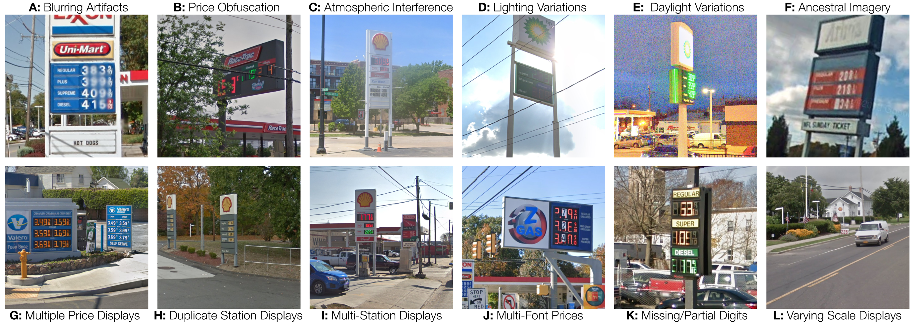
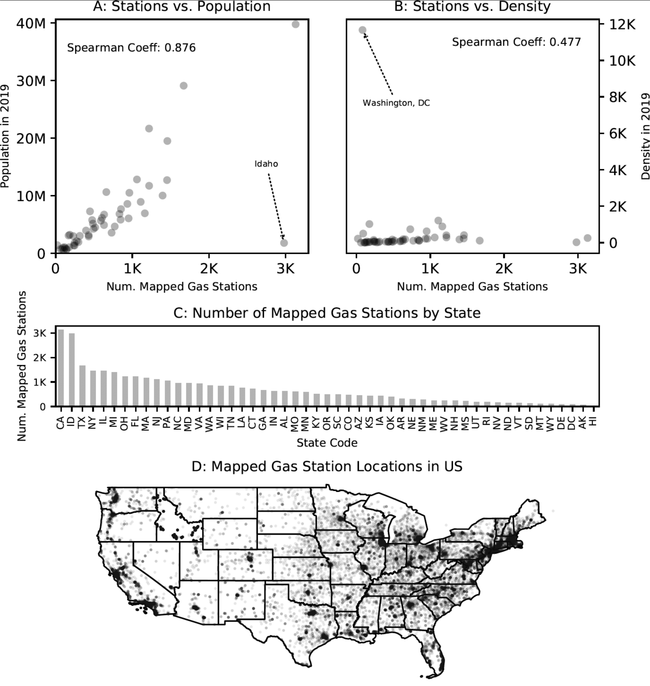

The Gas Prices of America (GPA) Dataset
The GPA is a real-world, benchmark image dataset for developing an evaluating machine learning and character/digit recognition algorithms. The GPA differentiates itself from other digit recognition datasets such as the SVHN dataset in that the images within contain multiple multi-digit numbers. Consequently, the GPA dataset can be used as a benchmark for multiple levels of digit recognition difficulty.
As with the MNIST and SVHN datasets, the GPA comprises high quality images (obtained from Gas Prices found in Google Street View images) organized to minimize data preprocessing and formatting. The digit recognition task presents a significantly harder, unsolved, real world problem (recognition of multiple multi-digits numbers in natural scene images).
Examples of easy and challenging images:



Description of GPA
The current GPA comprises a subset of 2,048 images.
Each image is 640X640px in either .jpg or .png format.
Annotations for each image are available in the following formats:
| GPA Dataset | Segmentation | Classification | ||||||
|---|---|---|---|---|---|---|---|---|
| (1) Sign-Level | (2) Price-Level | (3) Digit-Level | (4) Label-Level | (5) Single Price (Reg., Unl., Cash) |
(6) All Prices (no fractions) |
(7) All Prices (incl. fractions) |
(8) All Prices (incl. frac. & grade) |
|
| 2048 Subset | ✓ | ✓ | ||||||
| Superset | ||||||||
Publications
The GPA was originally iintroduced in the following publication:
[TBD]
Contributors to the GPA
Kevin Dick
Kevin Dick is currently pursuing a PhD in biomedical engineering specializing in data science and bioinformatics as part of the Carleton University Biomedical Informatics Colaboratory (cuBIC) in Ottawa, Canada. His research interests include data science, machine learning, high performance computing, secodary use of autonomous vehicle data, and scientometrics.
Francois Charih
François Charih is currently a PhD student in Electrical and Computer Engineering in the Carleton University Biomedical Informatics Colaboratory (cuBIC). His research interests include bioinformatics, applied machine learning and software development for applications in personalized medicine. Other areas of expertise include cloud computing, web development and science outreach.
Jimmy Woo
James R. Green
Dr. Green is a full professor in the Department of Systems and Computer Engineering at Carleton University. His research focuses on the application of machine learning to challenges in biomedical informatics, particularly in the presence of class imbalance. Current research projects include the prediction of protein structure, function, and interaction; the use of supervised and semi-supervised machine learning for the identification of microRNA in unique species; unobtrusive and non-contact neonatal patient monitoring; developing ML for audiology; applying computer vision to autonomous vehicle imagery; and the acceleration of scientific computing using parallel computing.
Made in with `;
Citation
If you use the GPA dataset in your work, please cite the following references:
author = {Dick, Kevin and Charih, François and Woo, Jimmy and Green, James R.},
publisher = {Scholars Portal Dataverse},
title = "{Sampled 2048 GPA Images with Annotated Regular Gas Price}",
UNF = {UNF:6:Sawptw7Psv/m8VVAsQ6m4w==},
year = {2020},
version = {V1},
doi = {10.5683/SP2/KQ6VNG},
url = {https://doi.org/10.5683/SP2/KQ6VNG}
}
Download the GPA
All files of the GPA dataset are available from the following DataVerse repository: GPA Dataset
| GPA Dataset | Segmentation | Classification | ||||||
|---|---|---|---|---|---|---|---|---|
| (1) Sign-Level | (2) Price-Level | (3) Digit-Level | (4) Label-Level | (5) Single Price (Reg., Unl., Cash) |
(6) All Prices (no fractions) |
(7) All Prices (incl. fractions) |
(8) All Prices (incl. frac. & grade) |
|
| 2048 Subset | Download | Download | ||||||
| Superset | ||||||||